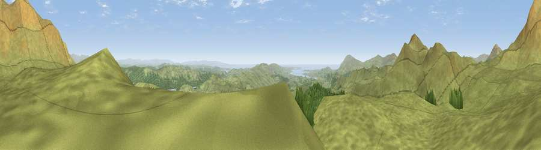

Lag Bank
#907 in England · top 8% of its area beats it · near SeathwaiteWhere it is
The exact computed spot (SD 25028 94241). Click the marker for map links.
The view, rendered

A 360° render of this exact spot computed from the terrain model, tree cover and land cover — summer colours, afternoon light, calibrated against photographs of famous viewpoints. Real trees, hedges and buildings will differ in detail.
The panorama
Grey silhouette: terrain skyline in each direction (720 bearings, Earth curvature and refraction included). Dashed green: skyline with trees (+15 m) and buildings (+8 m) as obstacles. Blue strip: how far the ground is visible on each bearing.
Where the view opens
Wedge length = distance to the farthest visible ground on that bearing (vegetation-aware). Rings at 10, 25 and 50 km.
What fills the view
67% grassland · 31% woodland · 1% water
Angular shares of the visible panorama (visual magnitude), not map area. Landscape diversity 0.32 (0–1 Shannon).
Key numbers
More beautiful places nearby
The staircase of upgrades: each row has a higher view potential than everything closer. Driving times are estimates from straight-line distance, calibrated against real road routing — check an actual route before setting out.
| Place | Direction | Drive | Score |
|---|---|---|---|
| White Pike | N · 1 km | ~4 min | 82.3 |
| White Maiden | NNE · 2 km | ~4 min | 83.0 |
| Caw | W · 2 km | ~5 min | 83.4 |
| Brown Pike | NNE · 3 km | ~6 min | 83.8 |
| Buck Pike | NNE · 3 km | ~8 min | 84.2 |
| Old Man of Coniston | NNE · 4 km | ~9 min | 85.2 |
| Illgill Head | NW · 14 km | ~25 min | 88.4 |
| Viewpoint near Boot | NW · 14 km | ~25 min | 88.9 |
54.33819, -3.15461 · source: osm peak · position refined by local search. Computed location — check access rights before visiting.